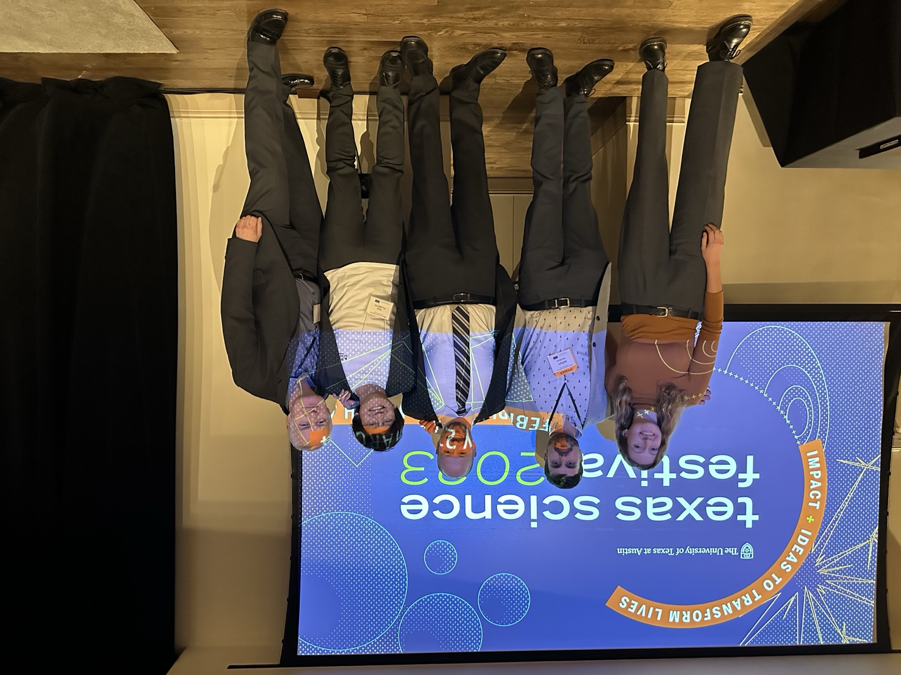
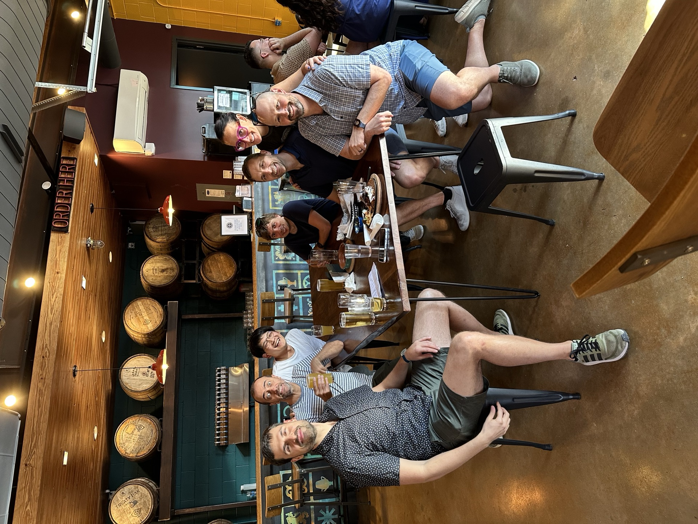
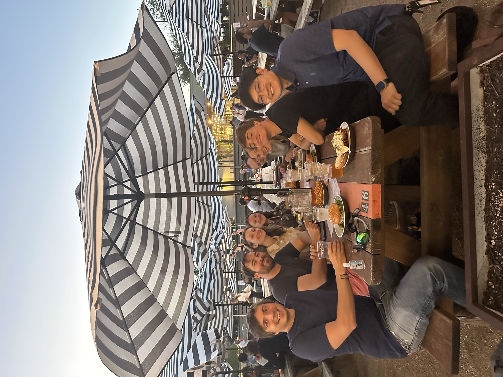
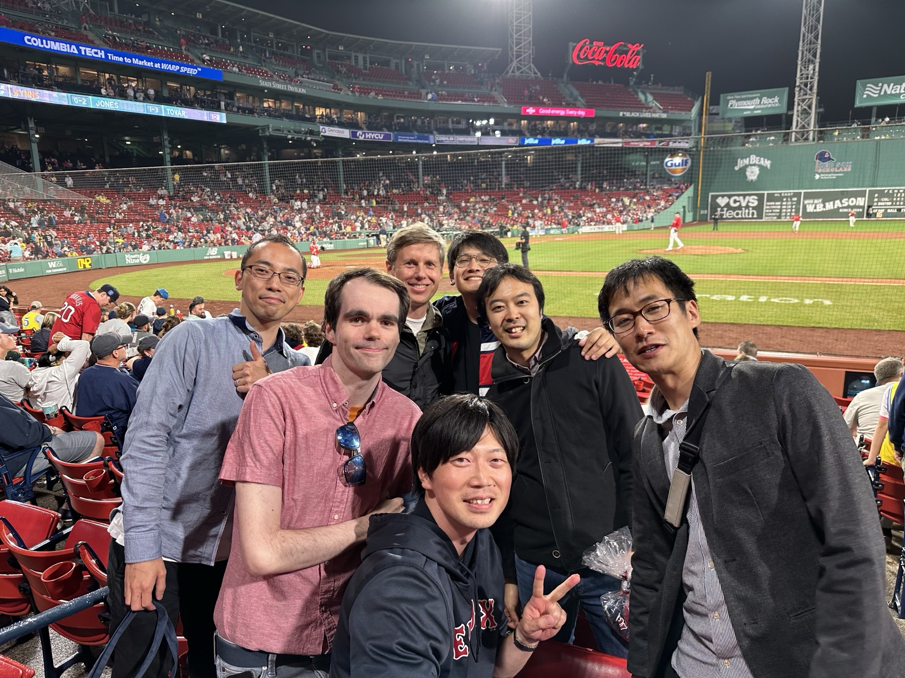
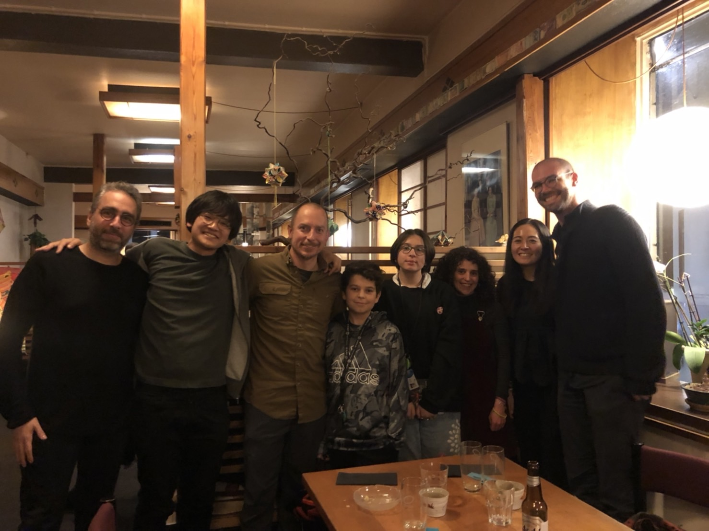
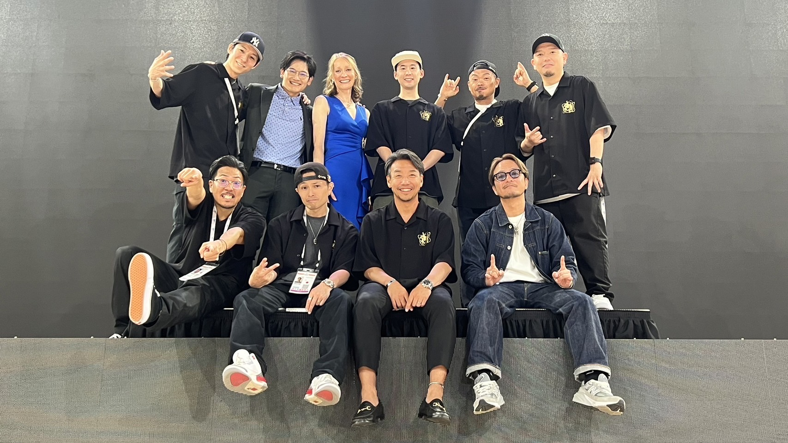
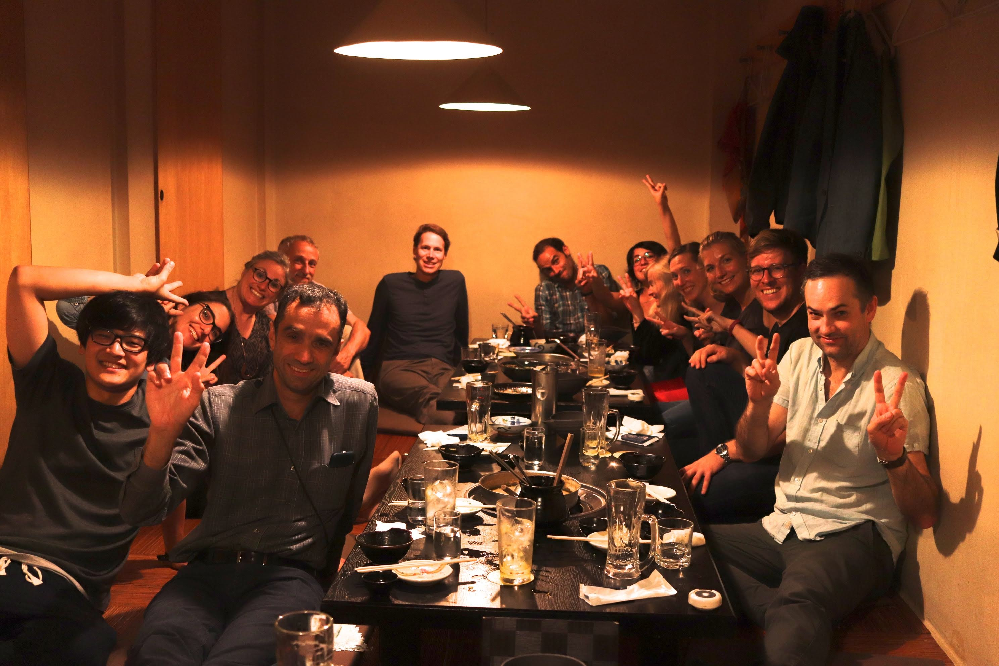
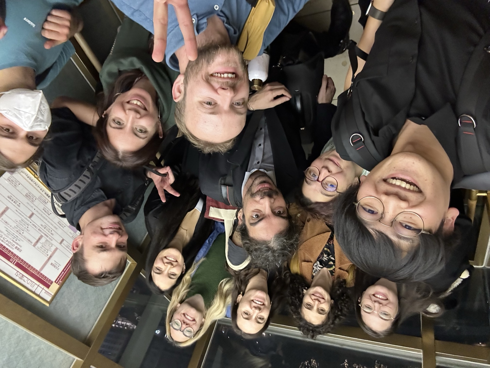

Short biography
I grew up in a rural town in Kyoto, Japan, surrounded by mountains that sparked my early curiosity about the world. I played baseball passionately until elbow injuries forced me to stop at 15, after which I took up badminton and Double Dutch, eventually becoming a world champion of Double Dutch in 2014.
Driven by a fascination with the unknowns of the universe, I earned my PhD in astronomy from the University of Tokyo in 2019. I enjoyed my postdoc life as a DAWN Fellow in Copenhagen and a NASA Hubble Fellow in Austin before joining the University of Toronto as a faculty member in 2025. My research focuses on distant galaxies and black holes, using multi-wavelength observations with JWST, ALMA, and observatories around the world.
Outside of astronomy, I enjoy traveling, playing sports, photography, camping, and board games. Above all, I find joy in sharing simple good times with good people.